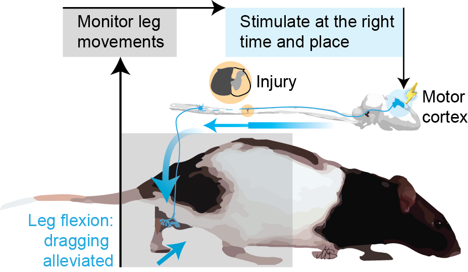

Neurotechnology
Mathematical Optimization
2025
Combining cortical and spinal stimulation maximizes the improvement of gait after spinal cord injury
iScience, 28(10)
Modulation of leg trajectory by transcranial magnetic stimulation during walking
Scientific Reports, 15(1), 21362
Robust prior-biased acquisition function for human-in-the-loop Bayesian optimization
Knowledge-Based Systems, 311, 113039
Hallucination Detox: Sensitivity Dropout (SenD) for Large Language Model Training
Proceedings of the 63rd Annual Meeting of the ACL
2024
Cortical neuroprosthesis-mediated functional ipsilateral control of locomotion in rats with spinal cord hemisection
eLife, 12, RP92940
Invasive brain computer interface for motor restoration in spinal cord injury: a systematic review
Neuromodulation: Technology at the Neural Interface, 27(4), 597-603
Gaussian-process-based Bayesian optimization for neurostimulation interventions in rats
STAR Protocols, 5(1), 102885
2023
Uncovering and leveraging the return of voluntary motor programs after paralysis using a bi-cortical neuroprosthesis
Progress in Neurobiology, 228, 102492
Use of invasive brain-computer interfaces in pediatric neurosurgery: technical and ethical considerations
Journal of Child Neurology, 38(3-4), 223-238
Implementing automation in deep brain stimulation: has the time come?
The Lancet Digital Health, 5(2), e52-e53
2021
Multi-pronged neuromodulation intervention engages the residual motor circuitry to facilitate walking in a rat model of spinal cord injury
Nature Communications, 12(1), 1925
An intracortical neuroprosthesis immediately alleviates walking deficits and improves recovery of leg control after spinal cord injury
Science Translational Medicine, 13(586), eabb4422

Neuroprosthetics: an outlook on active challenges toward clinical adoption
Journal of Neurophysiology, 125(1), 105-109
Hierarchical Bayesian optimization of spatiotemporal neurostimulations for targeted motor outputs
IEEE Transactions on Neural Systems and Rehabilitation Engineering, 28(6)